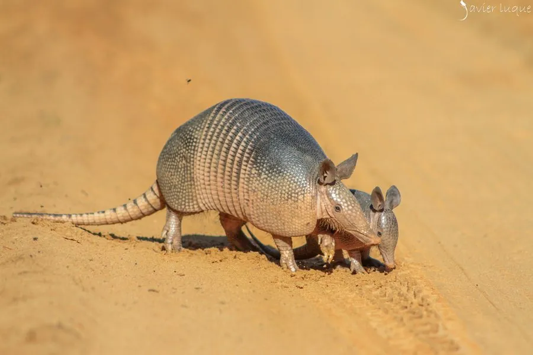

哺乳动物 · 动物界
九带犰狳 Dasypus novemcinctus

美洲常见的犰狳，背部有九条可伸缩的带状甲片，受惊时会跳起，一胎多产同卵四胞胎，善于挖洞和憋气。
- 分类
- 门脊索动物门纲哺乳纲目有甲目科犰狳科属犰狳属
- 栖息环境
- 森林、灌丛、草原与农田，偏好松软土壤便于挖洞
- 地理分布
- 美洲，从美国南部经中美洲到南美洲北部
- 保护级别
- IUCN 无危（LC）
物种志
九带犰狳体长 0.35–0.6 米，尾长 0.25–0.45 米，体重 3–6 kg。它的背部和头部覆有骨质甲片，肩部和臀部的甲片固定，中间有 9 条可活动的带状甲片，使它能够蜷曲；吻部尖长，耳朵大，四肢短，前爪强壮，适合挖掘。
九带犰狳分布于美洲，从美国南部经中美洲到南美洲北部，栖息于森林、灌丛、草原和农田，适应力强。它多在夜间活动，靠嗅觉寻找昆虫、蚯蚓、蜗牛和小型脊椎动物，也会挖洞捕食；受惊时会突然向上跳起，这反而常使它被汽车撞到。九带犰狳善于挖洞和憋气，能屏住呼吸在水下或松土中活动数分钟。雌兽妊娠期约 4 个月，一胎通常产 4 只同卵幼仔。九带犰狳是研究麻风病的特殊动物模型，种群总体稳定。
形态与习性
- 食性昆虫、蚯蚓、蜗牛与小型脊椎动物
- 体长0.35–0.6 m，尾长 0.25–0.45 m
- 体重3–6 kg
- 寿命野外约 12–15 年
- 繁殖妊娠期约 4 个月，一胎常产 4 只同卵幼仔
- 甲片背部有 9 条可活动带状甲片
- 憋气可屏住呼吸在水下活动数分钟
趣味知识
- 九带犰狳通常一胎产 4 只幼仔，且全部是同卵四胞胎。
- 受惊时它会突然向上跳起，反而常因此被汽车撞到。
- 背部中间的 9 条活动甲片让它能蜷曲身体。
- 九带犰狳是研究麻风病的重要动物模型。